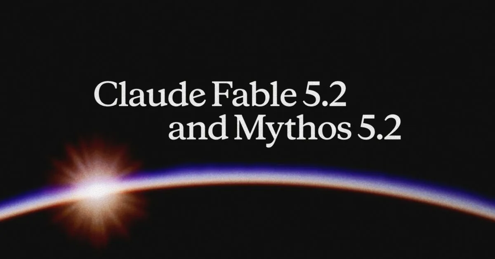

Anthropic ships Claude Fable 5.2 and Mythos 5.2, faster and 20% cheaper

Image: Anthropic
On Nov 9, Anthropic upgraded its top tier with Claude Fable 5.2 (available to everyone) and Claude Mythos 5.2 (the same underlying model, offered only to organizations verified through its cyber and life-sciences programs). Anthropic says the models output up to 30% faster than the 5.1 versions and cost $8 per million input tokens and $40 per million output (down from $10 and $50), with a 1M-token context, 128k max output, and an optional fast mode up to 2.5x faster at double the price. On Anthropic's own table, Fable 5.2 scores 49.1% on FrontierCode 2.0 (xhigh effort) versus 45.5% for Opus 5.5 and 69.9% on FrontierSWE v2. Anthropic still recommends Opus 5.5 as the daily driver, with Fable as an Advisor or Orchestrator for the hardest work. API notes flag breaking changes: a stricter prefix check on thinking blocks and a new computer-use toolset.
This is the clearest "planner plus workers" design from a major lab: a top model that advises or orchestrates cheaper ones. That is exactly how serious Claude Code and agent setups are being built now, and it is a useful pattern to teach.